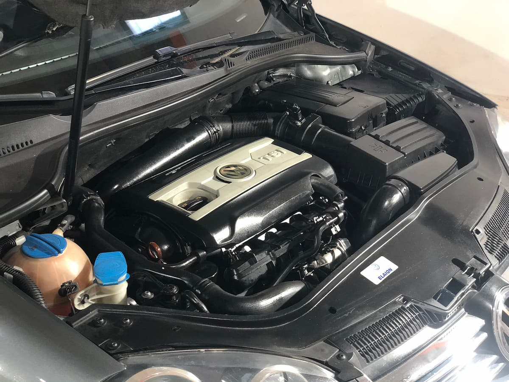

autos
El motor:
El Volkswagen Vento 2.0 TSI es un automóvil que posee una caja manual
de seis velocidades, dirección hidráulica, control eléctrico para los retrovisores,
frenos ABS, alarma y airbags frontales. Además, incluye cuatro válvulas por cilindro,
dirección mecánica asistida hidráulicamente, cinco velocidades, cuatro puertas
(tipo Sedán), faros antiniebla delanteros, inmovilizador de motor,
apertura remota de baúl, cristales eléctricos, y tercer stop.
Definitivamente, su motor. Su potencia máxima de 200 CV posibilita
el alto rendimiento de este modelo, permitiendo una aceleración de 0 a 100
en siete segundos, y una velocidad máxima de 230 kilómetros por hora.

Volver